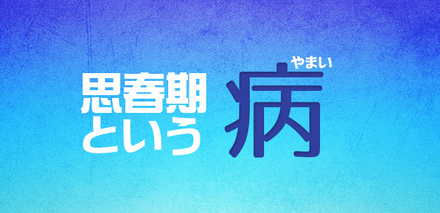

中2病ということばがあります。
これは思春期特有の心理状態と行動の特徴を表すことばですが、誰でも一度はかかるという意味で昔の「はしか」に似ているかも知れません。だいたい14歳（中２）くらいから始まります。
昔なら反抗期と呼んだのでしょうが、今の子どもたちはかつてのように明確な反抗期と言えるほどの暴れ方をしないので、こんなネーミングがついたのかも知れません。
しかし、そうは言っても中2病も反抗期も根底のところでは共通しています。
だいたいこんな症状（あえて症状と言います）が発症します。
① 口数が減る
特に男の子は学校のこと、友人のことなど親に話していたのにピタッと話さなくなる。
何か聞こうものなら「別に～」とか、上目使いでこちらをにらみ無視したりする。
女の子も同様。中には今までと変わらず親と話す子もいるが肝心なことは話さないことが多い。
② 態度が反抗的
男の子の中には母親に向かって「うるせ～ババア」など無慈悲（？）な悪態を吐く子も出てくる。
親や教師など権威あるものに批判的言動をし始める場合もある。「大人って汚ね～」とか「因数分解なんて何の役に立つんだ」など、親、学校、勉強という3点セットが格好の標的となる。
また「塾なんて行きたくねー。だってつまらないし～」とヤル気のない発言で親を慌てさせる。
③ 無気力になる
子ども時代活発だった子でも、この時期ボーっとしていたり、寝てばかりいるなど気力がないように見える場合がある。
それでいて友人などが誘いに来ると、一転してイソイソと食事やカラオケに出かけたりするので親の焦りを誘う。
勉強意欲も減退したように見える。
④ ヒーローに憧れる
親の理解できない音楽やミュージシャンを熱烈に信奉したり、アニメやゲームのキャラクターに共感したりする。
昔はアイドルなどの芸能人やスポーツ選手など、皆が憧れる存在に夢中になったが今の子は誰もが知っているヒーローではなく、自分だけのヒーローをもつことに優越を感じる傾向がある。
男の子はやや反社会的雰囲気のヒーローに、女の子はマンガやライトノベルなどのファンタジックなキャラに憧れるという傾向はあるものの、昔より細分化されている。
いかがでしょうか。お子さまに上記のような傾向が見られたら立派な中2病です。(笑)。
もちろん中2病は身体の病気ではありません。
誰でも通る思春期特有の状態です。
この時期の心理は「大人になりたい」「もう子供じゃない」と思いながらも現実には大人になりきれない、無力感と葛藤がうずまいている状態です。
また、肉体的にもホルモンバランスが崩れています。
そしてその状態は子どもにとって、結構ストレスフルなものです。
急激に大人びた言動のかげに傷つきやすい心が宿っています。
なのでこの時期の子どもに
「屁理屈ばっかり言うんじゃない」
「そんなことでは将来自分が困るんだぞ」
「お前はまだ何にもわかっちゃいない」
などあからさまに「真実」を言ってしまうのは良くありません。特にお父さん方は、このような身もフタもないことばを言いがちなので注意してください。
思春期の「困ったちゃん」を過度に心配する必要はありません。多くは一過性です。
ただ、それでも親の対応次第では「病」が重篤化する可能性もゼロではなく、その後の親子関係に亀裂が入ったり、子ども自身の成長に好ましくない影響が出ることもあります。
中2病。それは肉体上の病気ではありませんが、対応を誤ると後遺症が出たり長引いたりする点では病に似ているのかも知れません。親の対処法については次回にお話したいと思います。
これは実は2002年に書いたものを2012年に修正版として発表したものですが、内容的に古くなっていないと判断し、また今でも正しい塾選びの基準が浸透していないとの思いから掲載することにしました。
ぜひご覧ください。